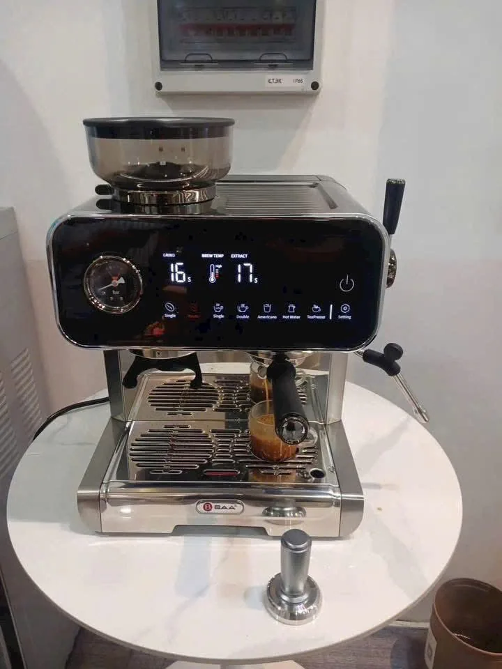
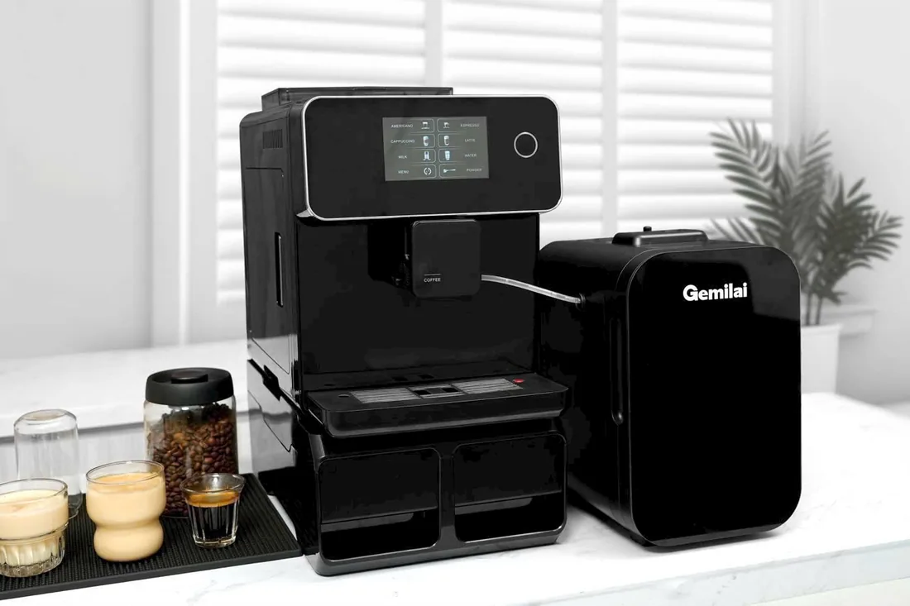
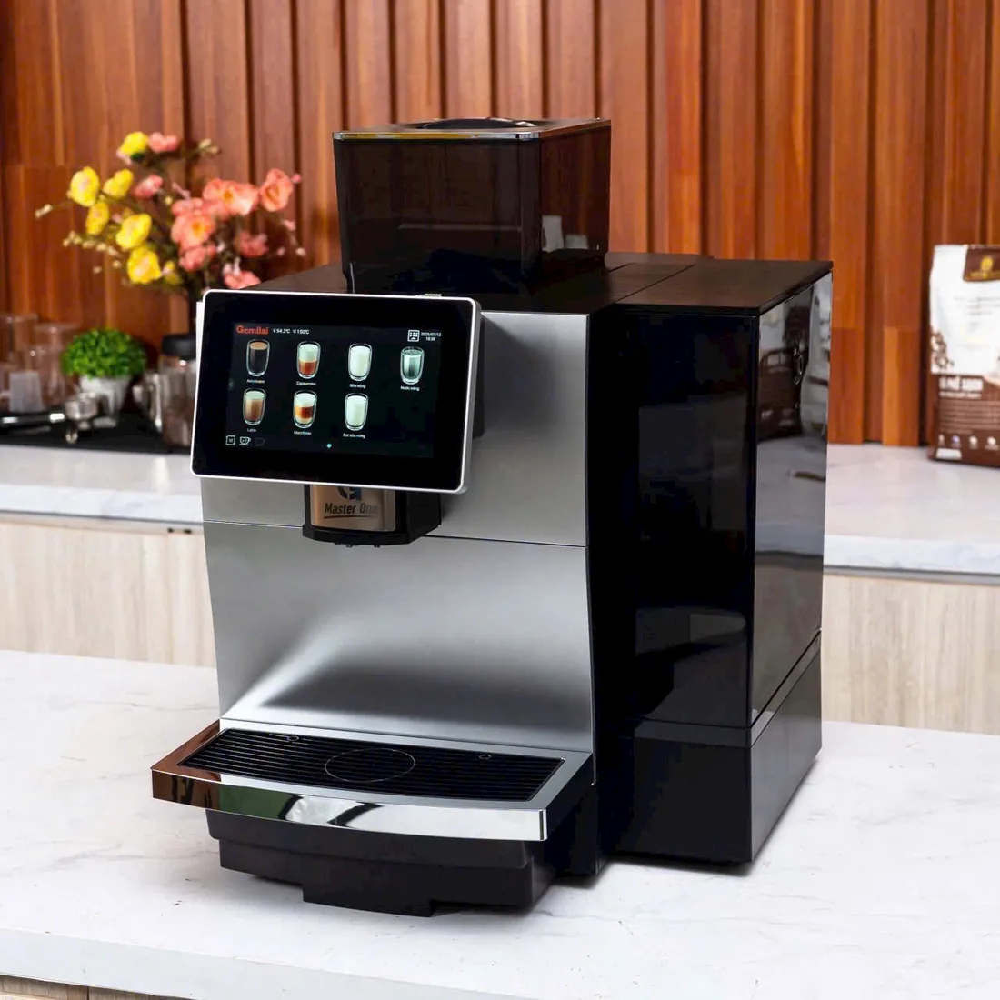

Một ly cà phê ngon lúc đầu giờ giúp nhân viên tỉnh táo, một ly cà phê mời khách khi chờ khám hay chờ tư vấn giúp doanh nghiệp ghi điểm ngay từ phút đầu. Với máy pha tự động và cà phê hạt rang mộc chất lượng cao, chi phí cho mỗi ly chỉ khoảng 5.500đ, thấp hơn nhiều so với mua cà phê ngoài.
Vì sao văn phòng, phòng khám nên có máy pha cà phê?
- Văn phòng: nhân viên có cà phê ngon ngay tại chỗ, không mất thời gian ra ngoài, tăng tập trung và gắn kết. Tiếp đối tác bằng ly espresso, latte pha tại chỗ chuyên nghiệp hơn cà phê gói.
- Phòng khám, spa, thẩm mỹ: khách chờ khám, chờ làm dịch vụ được mời một ly cà phê nóng, giảm cảm giác sốt ruột khi phải chờ lâu.
- Quầy dịch vụ khách hàng (showroom, ngân hàng, đại lý xe, bất động sản, salon): đồ uống miễn phí là điểm chạm trải nghiệm, giữ khách ngồi lâu hơn và tăng tỷ lệ chốt.
- Kiểm soát chi phí: biết chính xác chi phí mỗi ly, không phụ thuộc giá cà phê bên ngoài.
- Sạch và đồng đều: máy xay hạt ngay khi pha, định lượng chuẩn, ly nào cũng như ly nào, không lo cà phê pha tạp chất.
Chi phí mỗi ly chỉ khoảng 5.500đ
CAFEROA cung cấp cà phê hạt rang mộc chất lượng cao giá 350.000đ/kg. Theo định lượng của máy, 1kg pha được khoảng 70 ly espresso, tức khoảng 5.000đ tiền cà phê mỗi ly. Cộng thêm điện, nước và ly giấy, tổng chi phí khoảng 5.500đ/ly. Các món có sữa như latte, cappuccino cộng thêm tiền sữa tùy loại sữa sử dụng.
| Quy mô | Ly/tháng (22 ngày) | Cà phê cần dùng | Chi phí tự pha | Nếu mua ngoài (25.000đ/ly) | Tiết kiệm/tháng |
|---|---|---|---|---|---|
| 10 người | 220 ly | ~3 kg | 1.210.000đ | 5.500.000đ | 4.290.000đ |
| 20 người | 440 ly | ~6,3 kg | 2.420.000đ | 11.000.000đ | 8.580.000đ |
| 30 người | 660 ly | ~9,4 kg | 3.630.000đ | 16.500.000đ | 12.870.000đ |
| 50 người | 1.100 ly | ~15,7 kg | 6.050.000đ | 27.500.000đ | 21.450.000đ |
Tính theo mỗi người 1 ly/ngày, 22 ngày làm việc; giá mua ngoài tham khảo 25.000đ/ly.
3 dòng máy pha cà phê phù hợp

Máy 2 trong 1 (xay + pha)
- Pha espresso
- Công suất khoảng 70 ly/ngày
- Có cối xay tích hợp, vòi đánh sữa
- Hợp nhóm 10–30 người, phòng khám nhỏ

Máy tự động từ hạt
- Espresso, americano, latte, cappuccino
- Công suất khoảng 150 ly/ngày
- Bấm 1 nút, tự xay, tự pha
- Hợp văn phòng 20–80 người, quầy CSKH

Máy tự động cao cấp
- Espresso và 6 loại đồ uống mix từ cà phê
- Công suất khoảng 200 ly/ngày
- Màn hình cảm ứng, thao tác dễ
- Hợp doanh nghiệp lớn, bệnh viện, showroom
| Tiêu chí | 2 trong 1 | Tự động từ hạt | Tự động cao cấp |
|---|---|---|---|
| Giá máy | 11.000.000đ | 12.000.000đ | 27.000.000đ |
| Đồ uống | Espresso | Espresso, americano, latte, cappuccino | Espresso + 6 đồ uống mix |
| Công suất | ~70 ly/ngày | ~150 ly/ngày | ~200 ly/ngày |
| Cách dùng | Cần thao tác cơ bản | Bấm 1 nút | Bấm 1 nút, màn hình cảm ứng |
| Hoàn vốn* | ~560 ly | ~620 ly | ~1.400 ly |
*So với mua cà phê ngoài 25.000đ/ly, mỗi ly tự pha tiết kiệm khoảng 19.500đ.
Gợi ý chọn máy theo nhu cầu
- Dưới 30 ly/ngày, chủ yếu uống cà phê đen: máy 2 trong 1, chi phí đầu tư thấp nhất.
- 30–100 ly/ngày, cần latte, cappuccino cho khách: máy tự động từ hạt 12 triệu, ai cũng pha được, không cần nhân viên pha chế.
- Trên 100 ly/ngày, nhiều khách, cần menu đa dạng: máy tự động cao cấp 27 triệu, chạy bền, đủ 7 loại đồ uống.
- Luôn chọn máy có công suất cao hơn nhu cầu thực tế khoảng 30% để máy không phải chạy quá tải vào giờ cao điểm.
Cà phê hạt dùng cho máy
Máy pha tự động cần cà phê hạt rang đúng mức, không tẩm bơ, đường hay hương liệu. Cà phê tẩm ướp làm dầu bám vào cối xay, nhanh hỏng máy và cho vị gắt. CAFEROA cung cấp cà phê hạt rang mộc 100%, rang Hot Air theo mẻ nhỏ, phù hợp máy espresso và máy tự động: Espresso Signature cho crema dày, hợp latte, cappuccino, và Signature Roasted Beans dùng đa năng cho mọi dòng máy.
Nhận báo giá trọn gói máy + cà phê
CAFEROA tư vấn chọn máy theo số người, giao cà phê định kỳ hằng tuần cho văn phòng, phòng khám.
Câu hỏi thường gặp
Chi phí một ly cà phê pha máy là bao nhiêu?
Với cà phê hạt rang mộc 350.000đ/kg, 1kg pha được khoảng 70 ly theo định lượng của máy, tức khoảng 5.000đ tiền cà phê mỗi ly. Cộng thêm điện, nước, ly giấy, tổng chi phí khoảng 5.500đ/ly.
Văn phòng 20 người nên chọn máy nào?
Văn phòng 20 người dùng khoảng 20–40 ly/ngày. Nếu chỉ uống espresso, cà phê đen, máy 2 trong 1 (11 triệu) là đủ. Nếu muốn có latte, cappuccino bấm một nút, nên chọn máy pha tự động từ hạt 12 triệu, công suất 150 ly/ngày.
Bao lâu thì hoàn vốn tiền máy?
So với mua cà phê ngoài khoảng 25.000đ/ly, mỗi ly tự pha tiết kiệm khoảng 19.500đ. Máy 11–12 triệu hoàn vốn sau khoảng 560–620 ly, tức chưa tới 1 tháng nếu dùng 30 ly/ngày. Máy 27 triệu hoàn vốn sau khoảng 1.400 ly.
Một tháng cần bao nhiêu kg cà phê?
Mỗi kg pha được khoảng 70 ly. Văn phòng 30 người, mỗi người 1 ly/ngày, 22 ngày làm việc cần khoảng 660 ly, tương đương 9–10 kg cà phê mỗi tháng.
Giá máy và công suất tham khảo theo thông tin nhà cung cấp, có thể thay đổi theo thời điểm. Chi phí mỗi ly tính theo cà phê hạt 350.000đ/kg, 1kg pha khoảng 70 ly. Bài viết bởi CAFEROA.